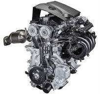
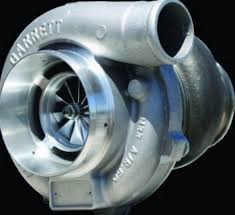
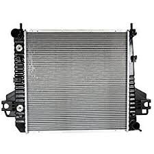
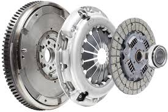
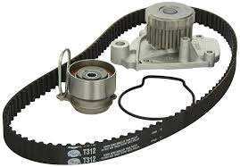
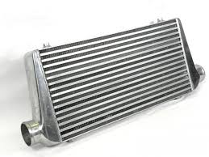

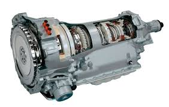
Manufacturing a car is a complex process that involves numerous steps and the collaboration of various departments and specialized workers. Here is a step-by-step outline of the basic process involved in manufacturing a car:
Each of these steps involves numerous detailed processes and requires coordination across various departments, including engineering, manufacturing, quality control, logistics, and customer service. The entire process is designed to ensure that the final product meets high standards of quality, safety, and performance.
| BEV | PHEV | Gasoline | - |
|---|---|---|---|
| Vehicle weight | 1696kg | 1380kg | 1307kg |
| Tire radius | 315.95mm | 315.95mm | 300.3mm |
| Coefficient of drag | 0.29 | 0.29 | 0.3 |
| Frontal area | 2.27 m2 | 2.27 m2 | 2.10 m2 |
| Engine size | - | 1.8L | 2.0L |
| Engine max. torque | - | 142.5 N m @4000rpm | 169.5 N m @4000rpm |
| Engine max. speed | - | 4500rpm | 6500-6900rpm |
| Engine max. power | - | 73kW @5200rpm | 85.8 Kw 5200 rpm |
| Fuel tank capacity | - | 40.1L | 54.9L |
| Motor(s) type | PMSM | PSMP | - |
| Motor(s) max. torque | 290N m | 200 N m for both | - |
| Motor(s) max. speed | 10390 rpm | 12000 rpm for both | - |
| Motor(s) max. power | 80 kW | 60 kW and 42 kW | - |
| Battery cell capacity | 33.1 Ah | 33.1 Ah | - |
| Battery package capacity(before optimization) | 24 kWh | 12 kWh | - |
| Engine | An engine or motor is a machine designed to convert one or more forms of energy into mechanical energy. |
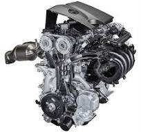
|
|---|
| Turbo | In an internal combustion engine, a turbocharger (also known as a turbo or a turbosupercharger) is a forced induction device that is powered by the flow of exhaust gases. It uses this energy to compress the intake air, forcing more air into the engine in order to produce more power for a given displacement. |
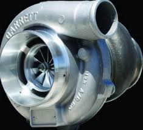
|
| Radiator | Radiators are used for cooling internal combustion engines, mainly in automobiles but also in piston-engined aircraft, railway locomotives, motorcycles, stationary generating plants and other places where heat engines are used (watercrafts, having an unlimited supply of a relatively cool water outside, usually use the liquid-liquid heat exchangers instead). |
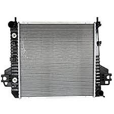
|
| Clutch | A clutch is a mechanical device that allows the output shaft to be disconnected from the rotating input shaft.[1] The clutch's input shaft is typically attached to a motor, while the clutch's output shaft is connected to the mechanism that does the work. |
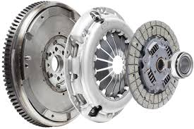
|
| Timing belt |
A timing belt is a non-slipping mechanical drive belt and the term may refer to either:
|
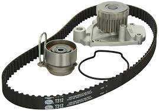
|
| Intercooler | Most commonly used with turbocharged engines, an intercooler is used to counteract the heat of compression and heat soak in the pressurised intake air. By reducing the temperature of the intake air, the air becomes denser (allowing more fuel to be injected, resulting in increased power) and less likely to suffer from pre-ignition or knocking. Additional cooling can be provided by externally spraying a fine mist onto the intercooler surface, or even into the intake air itself, to further reduce intake charge temperature through evaporative cooling. |
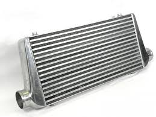
|
| Diesel particulate filter | Wall-flow diesel particulate filters usually remove 85% or more of the soot, and under certain conditions can attain soot removal efficiencies approaching 100%. Some filters are single-use, intended for disposal and replacement once full of accumulated ash. Others are designed to burn off the accumulated particulate either passively through the use of a catalyst or by active means such as a fuel burner which heats the filter to soot combustion temperatures. |
|
| Transmission | A transmission (also called a gearbox) is a mechanical device which uses a gear set—two or more gears working together—to change the speed or direction of rotation in a machine.[1][2] Many transmissions have multiple gear ratios, but there are also transmissions that use a single fixed-gear ratio |
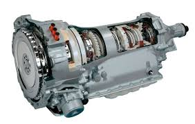
|